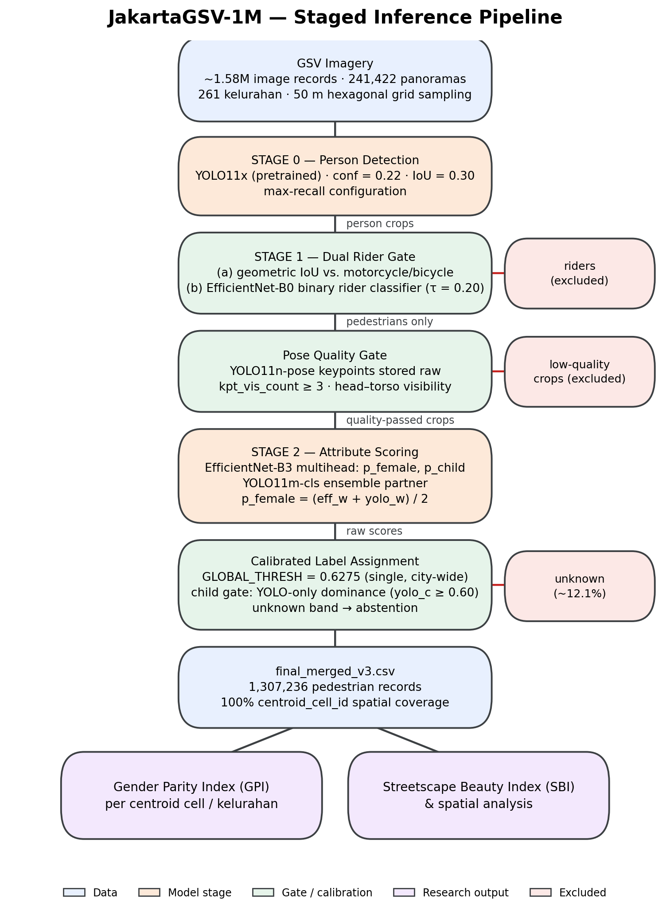
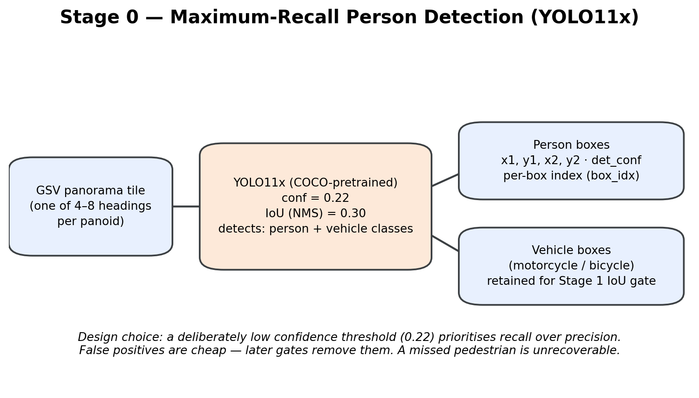
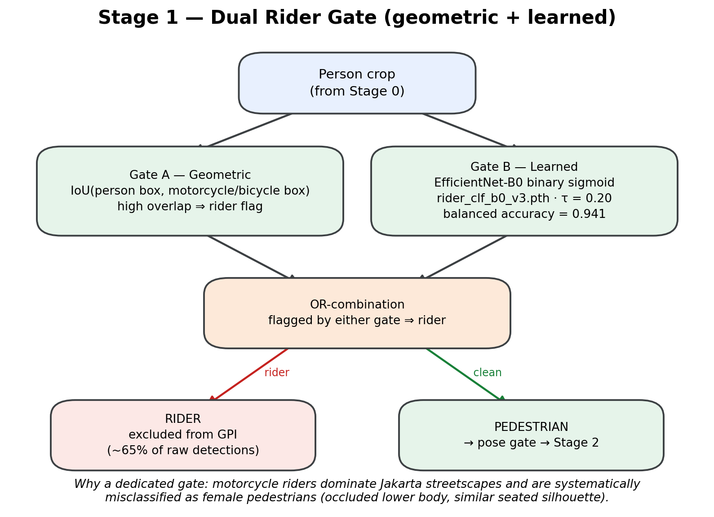
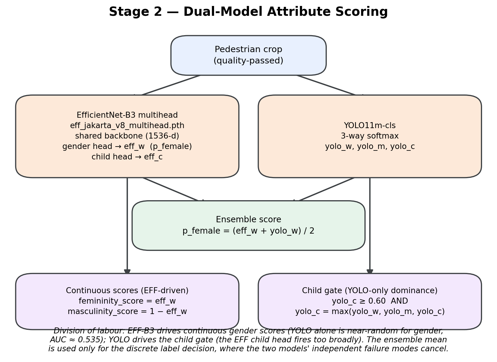
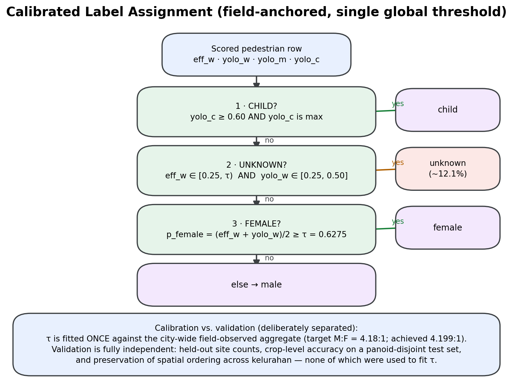

Pipeline
Methods
How JakartaGSV-1M measures who is on the street: a 50-metre hexagonal sampling grid, a five-stage detect→gate→score→calibrate pipeline for pedestrian gender presence, and a parallel segmentation track for streetscape quality.
Sampling: the hexagonal grid
Jakarta's road network is dense in the center and sparse at the periphery — sampling along roads alone would over-represent arterial corridors. Instead, the city is tiled with a 50-metre hexagonal grid, querying the nearest available GSV panorama to each hexagon centroid. Hexagons give uniform nearest-neighbour distances in every direction (unlike squares, which distort along diagonals), giving alleys, kampung interiors, and riverside paths the same chance of representation as arterial roads. Every retained record carries a centroid_cell_id, the spatial join key for every downstream analysis.
Why a staged pipeline, not one end-to-end model
Classifying pedestrian gender from street-level imagery is really three different problems wearing one coat: finding people in cluttered, occluded scenes; excluding motorcycle and bicycle riders — a problem specific to a motorcycle-dominant streetscape; and estimating gender from body shape and posture alone, since Google blurs every face. Each sub-problem needs different visual features and has a different amount of training data available, so each stage is trained, validated, and repaired independently — when a bug is found in one stage, only that stage re-runs, not the full 1.58M-image inference.
One design principle runs through every stage: store raw signals, apply thresholds as late as possible. Keypoint counts, sigmoid scores, and softmax vectors are all persisted at inference time; every decision threshold is applied afterward, on the stored table — so the entire calibration can be revisited without a single GPU-hour of re-inference.

Stage 0 · maximum-recall person detection
YOLO11x, a large pretrained detector, runs on every panorama tile, deliberately configured for recall over precision — confidence 0.22, NMS IoU 0.30. The cost is asymmetric: a false positive (a mannequin, a shadow) is cheap, since later gates remove it. A false negative — a missed pedestrian — is unrecoverable and biases the count directly. The same pass also records motorcycle and bicycle boxes, not as analysis targets but as fuel for the Stage 1 geometric rider check.
A custom detector was tried first and lost. A model fine-tuned on CrowdHuman and WiderPerson reached only 0.635 recall on Jakarta validation imagery, against an 0.88 target. The pretrained YOLO11x in a high-recall configuration outperformed it — reported here plainly, since for city-scale counting a well-configured general-purpose detector beat a bespoke one, and the engineering effort went to the stages where domain adaptation genuinely mattered.

Stage 1 · the dual rider gate, then a pose quality gate
Jakarta is a motorcycle city: roughly 65% of detected persons are riders, and riders are systematically misread as female pedestrians — a seated posture and occluded lower body mimic the visual statistics of women in standard attribute datasets. Left unfiltered, riders wouldn't add random noise to GPI; they'd add directional bias.
Two gates run on every crop, and a crop flagged by either is excluded: a geometric gate intersecting the person box against Stage 0's motorcycle/bicycle boxes, and a learned gate — an EfficientNet-B0 binary classifier trained on ~10,000 curated Jakarta crops (sigmoid threshold 0.20, balanced accuracy 0.941) that catches riders whose vehicle the detector missed. The two fail differently — geometry misses hidden vehicles, the classifier misses unusual poses — so their union catches more than either alone. Rider rates converged at ~65% consistently across all four collection phases after repair, which is exactly the cross-phase stability expected if the gate is measuring the city rather than measuring artifacts.
The Funnel Reality: The rider gate alone removes two-thirds of all detections[cite: 3]. Once the size and confidence gates are applied, the gender classifier ultimately only evaluates 12% to 22% of the people the detector originally located[cite: 1, 3]. It is critical to note that the rider gate has never been validated against independent hand-labelled ground truth[cite: 3].
Surviving crops pass a lightweight YOLO11n-pose quality gate: fewer than 3 visible keypoints (severe occlusion, edge truncation, non-human false positives) and the crop is excluded before any gender scoring runs. Following the raw-signals principle, the keypoint counts themselves are stored rather than a pass/fail flag, so the threshold can be revisited without re-running pose inference at scale.

Exclusion 1 of 3
low_conf
Stage 0 detection confidence itself was low — uncertain whether there's a person there at all. About detection, not gender.
Exclusion 2 of 3
bad_quality
Failed the pose/quality gate (blur, exposure, severe occlusion) before gender classification was attempted at all.
Exclusion 3 of 3
unknown
Detection and quality both passed fine — the gender classifier's own confidence landed in the gated uncertain zone. This gate is asymmetric; it fires when both models agree on a middling score, inadvertently suppressing marginal-female calls specifically[cite: 3].
unknown rows carry a meaningful gender probability; low_conf and bad_quality rows are excluded before scoring runs.
Stage 2 · two models, two jobs
Gender estimation uses two architecturally different models — not because two is better than one, but because each is demonstrably good at a different sub-task and demonstrably bad at the other's. EfficientNet-B3 is a multihead model: a shared backbone with a gender head (eff_w, probability female) and a child head (eff_c). YOLO11m-cls is a separate 3-way softmax (yolo_w, yolo_m, yolo_c) trained on the same Jakarta crops.
The Prior Shift (Training Imbalance): The training pipeline was explicitly designed as a "Woman-First Pipeline"[cite: 3]. Among adults, the training data was engineered to be 49.6% female, utilizing specific datasets (like PETA, providing women and children only), focal loss weighting (pos_weight=5.0), and checkpoint selection optimized for female F1 scores[cite: 3]. This is a deliberate prior shift intended to maximize minority class recall, as the real-world Jakarta street baseline is only 25.4% female[cite: 3].
The division of labour is deliberate: for continuous gender scoring, EfficientNet wins decisively — YOLO11m-cls alone is barely above chance for female-vs-male (ROC-AUC ≈ 0.535), so every continuous score in the released data comes from the EfficientNet head alone. For the child gate, YOLO wins — the EfficientNet child head fires too broadly on small adults and seated figures, so children are labelled only by YOLO dominance. For the discrete label decision, the deployed code blends the scores as an average. Important Note: The training author explicitly warned against using this pseudo-softmax ensemble because the models' female scores correlate weakly (0.21) and measure vastly different properties, but the deployment averages them regardless[cite: 3].

Calibrated label assignment
Raw sigmoid scores aren't probabilities you can threshold at 0.5 — training-set class balance, domain shift, and face-blurring all move the true operating point. The pipeline anchors instead to field observation: manual street counts across Jakarta established a city-wide ratio of approximately 4.18 men per woman. A single global threshold (currently debated in source files as either 0.6176, 0.62, or 0.6275) is applied to the ensemble score city-wide[cite: 1, 3]. Because the training stage embedded a five-fold bias toward female predictions, this threshold acts strictly as a counterweight to offset that design[cite: 3].
Per-phase or per-district thresholds were explicitly rejected — letting the threshold vary by stratum would let calibration silently absorb exactly the spatial variation GPI is meant to measure. One city, one threshold. Also note that the model was evaluated at a 0.45 threshold during training, yet is deployed at this much higher ~0.62 threshold in production[cite: 3].
Crops in a genuinely ambiguous band — where both models sit in their uncertain mid-range — are labelled unknown (~12.1% of pedestrian rows) rather than forced into a class. Abstention is reported, not hidden. Any remaining detections that fail to trigger a specific categorization are dumped into a residual male category (which currently contains a 38% non-adult-male false positive rate)[cite: 1, 3].

Why prevalence-matching, specifically
Fitting τ to a target ratio and then citing that ratio as evidence of accuracy would be circular, so calibration and validation are kept strictly separate. Calibration uses only the single city-wide aggregate ratio. Validation uses independent evidence: pedestrian counts at held-out field sites never used for calibration, crop-level accuracy on a panoid-disjoint test set, and preservation of the spatial ordering of gender presence across kelurahan.
The estimator has a property worth stating plainly: because it matches score rank to a target prevalence rather than thresholding a raw probability, it is invariant to any monotone recalibration of the underlying scores (Platt scaling, temperature scaling, or any other strictly increasing transform yields identical labels). That matters because deep network sigmoid outputs are notoriously miscalibrated as true probabilities, and face-blurring makes any calibration assumption more fragile still — the method sidesteps the problem rather than assuming it away. The one thing the method does require — score ranking quality — is exactly what's validated independently via AUC on the held-out test set.
Two further checks accompany the point estimate: a cluster bootstrap confidence interval (resampling whole panoramas, not individual rows, since pedestrians in the same scene are correlated), and a spatial-ordering sensitivity check — perturbing τ across a band and confirming the Spearman rank correlation of kelurahan-level GPI stays flat. The map, not the scalar, is the finding.
Data integrity
Two pipeline bugs were found, repaired, and are reported openly rather than quietly patched: a missing per-box index that scrambled score-to-person assignment in multi-person images, and a filename-collision bug that cropped roughly 150,000 images from the wrong source files in one collection phase. Post-repair verification confirmed 0.0% duplicated coordinates and scores across all phases.
One finding from that repair is worth treating as a result in its own right: an apparent demographic difference in one phase vanished entirely once the bug was fixed — all four phases now agree on the naive male:female ratio to within 0.02. What looked like a signal was an artifact, and catching that is exactly what the repaired, re-verified pipeline is for.
Streetscape segmentation
The segmentation track runs independently of the pedestrian track, on the same panoramas. A YOLOv8x-seg model trained on Mapillary Vistas — chosen for its geographic diversity, including tropical and informal urban settings the more common benchmark datasets lack — produces per-image pixel ratios across roughly two dozen streetscape categories: sidewalk, curb, crosswalk, road, lane marking, building, wall, fence, street furniture, vegetation, terrain, and more.
For the Streetscape Quality Index specifically, this rich output is distilled down to two components: a vegetation ratio and a ground-surface condition score, remapped from the full Mapillary category set. All segmentation inference runs directly on GSV imagery with no additional Jakarta-specific fine-tuning.
Spatial indices
Three indices are computed per kelurahan from the two tracks above.
GPI · Gender Presence Index
GPI = 0.35·FPR + 0.35·FCR + 0.15·(1−HHI) + 0.15·CPRFPRFemale Presence Rate — share of images with a female detectionFCRFemale Count Ratio — female share of all non-unknown detectionsHHIHerfindahl–Hirschman concentration of presence across time-of-day & weekday/weekend; (1−HHI) rewards habitual rather than occasional useCPRChild Presence Rate — a proxy for caregiver safety judgement
Weights estimated via PCA against field-observed female pedestrian share at 48 validation sites. Field validation: r = 0.73 (p < 0.001).
SQI · Streetscape Quality Index
SQI = 0.5·VR + 0.5·PQSVRVegetation Ratio — mean vegetation pixel sharePQSPavement Quality Score — share of ground-surface pixels in good condition
Validated against 36 expert street audits (Irvine–Minnesota Inventory protocol): r = 0.69 (p < 0.001).
SUI · Spatial Uncertainty Index
SUI = U / (F + M + C + U)F, M, C, UCounts of female, male, child, and unknown detections in a kelurahan
Rather than discarding low-confidence detections, SUI turns them into an honesty check: kelurahan with SUI > 0.25 are flagged in every downstream economic analysis, so results aren't presented with more confidence than the underlying classifier actually has.